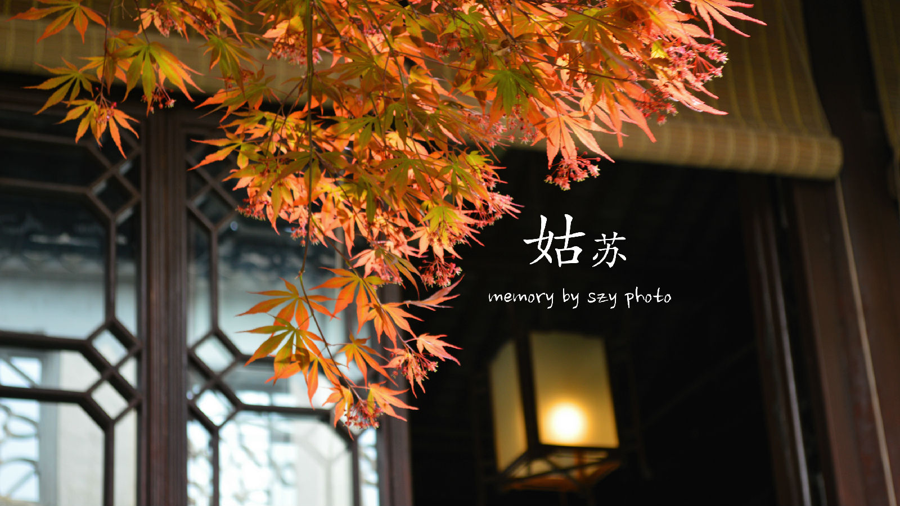

苏州，古称吴、吴都、吴中、东吴、吴门，现简称苏。苏州自有文字记载以来的历史已有4000多年，公元前514年建城，是中国首批24个历史文化名城之一，中国重点风景旅游城市，也是4个中国重点环境保护城市之一、长江三角洲重要的中心城市之一。隋开皇九年（公元589年）始定名为苏州，以城西南的姑苏山得名，沿称至今。苏州是江苏省的经济、对外贸易、工商业和物流中心，也是重要的文化、艺术、教育和交通中心。 苏州旅游景点众多，旅游资源丰富。其中苏州以园林与水乡古镇名闻天下，苏州古典园林的历史可上溯至公元前6世纪春秋时吴王的园囿。
“苏州园林甲天下”，苏州园林是建筑、山水、花木、雕刻、书画的综合艺术品，集自然美和艺术美于一体，构成了曲折迂回、步移景换的画面。苏州旅游景点除了著名的苏州园林外，还有众多的苏州古镇，有吴江同里、震泽、昆山周庄、锦溪、千灯、常熟沙家浜、古里、太仓沙溪、浏河、吴中区甪直、光福、木渎、东山、高新区的镇湖等镇。苏州旅游局现正发展村的旅游，如吴中区的三山岛、明月湾、旺山，高新区的树山，相城区的莲花岛、常熟的蒋巷等村，这些村以优美、质朴的景色和可口的吴地农家菜，正成为苏州旅游的新磁场。 苏州旅游景点既有园林之美，又有山水之胜。寺观名刹，遍布城乡；文物古迹，交相辉映。加以文人墨客题咏铭记，作画书联，更使之名扬中外。灵岩山、天平山、洞庭东山和西山、邓尉山、穹窿山、白马涧、常熟虞山、昆山玉山、张家港香山等处，都是天然的风景胜地。苏州乐园、金鸡湖摩天轮公园、阳山温泉、镇湖刺绣街、常熟服装城等现代旅游设施业也吸引了众多海内外游客。